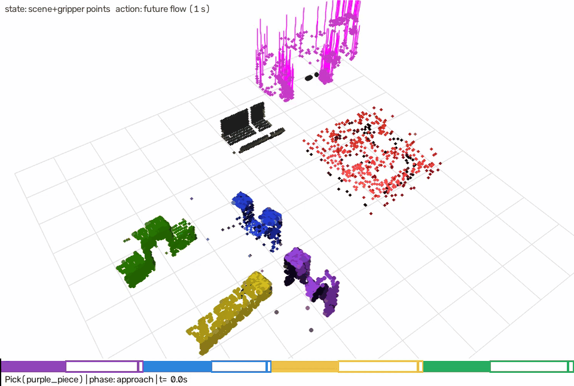
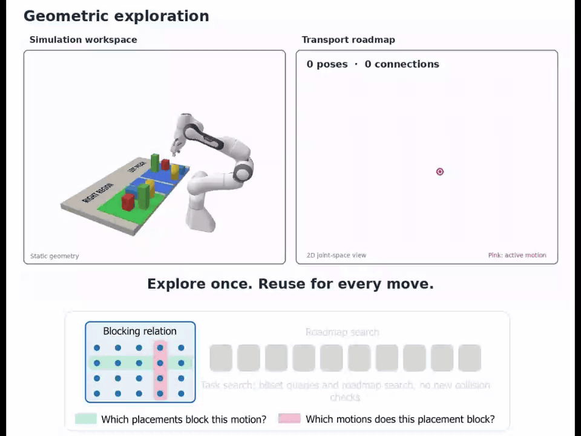

ONGOINGCompositional Skill Learning
Learning reusable skills from 3D point dynamics without hand-defined symbolic domains, and selecting skills from scene point clouds and language for assembly and arrangement tasks.
View project →I am a Ph.D. researcher in Robotics at Khalifa University, advised by Dr. Irfan Hussain, and a Graduate Research Assistant at the KU Center for Autonomous Robotic Systems (KUCARS).
My research studies how robots can generalize to unseen, long-horizon tasks, with an emphasis on compliant interaction and compositional skill learning. I combine task and motion planning with reinforcement learning and diffusion-based primitives that adapt to contact and learn skill abstractions from 3D point dynamics.
My long-term goal is to enable robots to perform complex assembly tasks from high-level instructions—such as “assemble the toy airplane”—using physically grounded, reusable skills.
WHAT I WORK ON

ONGOINGLearning reusable skills from 3D point dynamics without hand-defined symbolic domains, and selecting skills from scene point clouds and language for assembly and arrangement tasks.
View project → ROBOT LEARNING
ROBOT LEARNINGDiffusion-based contact-rich manipulation with geometric ProDMP decoding, stiffness prediction, and force-responsive directional admittance under Cartesian impedance control.
View project → REINFORCEMENT LEARNING
REINFORCEMENT LEARNINGGoal-conditioned reinforcement learning for palletizing large objects in constrained spaces, with demonstration-based curriculum learning and zero-shot sim-to-real transfer.
View project →
TASK & MOTION PLANNINGGeometric blocking relations and dependency-guided planning for efficient multi-query manipulation, validated on a physical Franka robot.
View project →SELECTED ACADEMIC WORK
M. Irfan, A. Nader, M. Ud Din, I. Hussain
Intelligent Service Robotics
DOI ↗Q. Chen*, M. Irfan*, Q. Yu, J. Sun, M. Ud Din, D. Lin, Y. Dong, S. He, I. Hussain
Journal of Field Robotics · *Equal contribution
DOI ↗A. N. Ahmed, O. Moured, M. I. Mohammed Abdul, M. Ud Din, I. Hussain
IEEE/RSJ International Conference on Intelligent Robots and Systems (IROS)
arXiv:2609.37681A. Nader, M. Irfan, M. Ahmed, I. Hussain
IFAC-PapersOnLine, 58(20):215–222
M. Irfan et al.
Under review · IEEE Robotics and Automation Letters (RA-L)
Muhayy Ud Din, M. Irfan, et al.
Under review · Robotics and Autonomous Systems
Muhayy Ud Din, M. Irfan, et al.
Under review · IEEE ICRA 2027
MY BACKGROUND
Khalifa University · KUCARS
Robot learning and planning for long-horizon, contact-rich manipulation.
Tata Consultancy Services · Hyderabad, India
Backend and application development for banking and financial services.
Khalifa University · Advisor: Dr. Irfan Hussain
Khalifa University · GPA: 3.5/4.0
Thesis: ELPaR
University College of Engineering, Osmania University · First Class with Distinction
ACADEMIC INSTRUCTION
Graduate Teaching Assistant · Khalifa University
Forward and inverse kinematics, Jacobian-based velocity kinematics, robot dynamics, and manipulator control.
Laboratory instruction in Linux, ROS, URDF-based robot modelling, obstacle avoidance, and robotics software development.
Hands-on interdisciplinary engineering labs focused on prototyping, system integration, and practical problem-solving.
Khalifa University
Ministry of External Affairs, Government of India · Awarded to top 100 CBSE students in Gulf countries
Python · C/C++ · MATLAB · PyTorch · ROS / ROS 2 · NVIDIA Isaac Lab · MuJoCo · robomimic · Git · Franka FR3 / Panda · UR manipulators